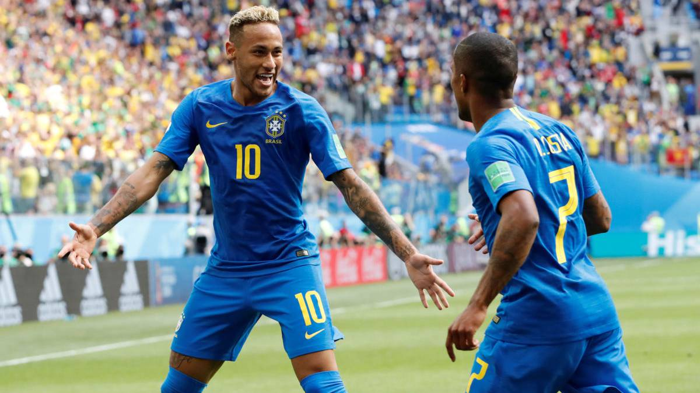

MUNDIALES
El delantero del PSG y de la selección brasileña, Neymar concedió una serie de entrevistas a DAZN donde habla del próximo Mundial que se disputará en Qatar en el invierno de 2022. El crack brasileño ha soltado un bombazo. "Creo que el Mundial de Qatar será mi último porque no sé si tengo la capacidad mental como para seguir siendo futbolista". Unas declaraciones que han pillado por sorpresa al mundo del fútbol ya que, si cumple con lo que ha dicho, se retiraría a los 30 años.
A pesar del bombazo, Neymar se enfoca en el Mundial. "Quiero lograr el sueño que llevo dentro desde hace muchos años: ser campeón del mundo con mi país." Neymar no ha tenido mucha suerte en los últimos años. Cayó derrotado hace dos temporadas en la final de la Champions League y esta pasada no ganó ni un solo título grande con el PSG. Por ello, muchos creen que quería regresar al Barcelona para jugar con su amigo Messi... aunque, al final, el argentino se mudo a París.
DAZN estrenó hoy el documental 'Neymar Jr. and The Line of Kings'. A través de una serie de entrevistas con el flamante futbolista del PSG, esta película cuenta la historia de las grandes estrellas de la historia del fútbol brasileño en los últimos 70 años. El primero, Neymar.
En la conversación con DAZN el astro brasileño expresa, sin embargo, cuál es su sueño con Brasil: "Haré todo lo posible para salir bien del fútbol, haré todo lo posible para ganar con mi país, para hacer realidad mi mayor sueño desde que era pequeño. Y espero poder hacerlo", refiriéndose a ser campeón del mundo en 2022.
Hay que recordar que Neymar ha jugado hasta el momento sólo dos Mundiales, tras irrumpir en el panorama futbolístico allá por 2010. El primero, en 2014, fue en su país, y acabó en cuarto lugar tras ser goleado en semifinales por Alemania, a la postre campeón. El segundo fue en Rusia 2018, y Brasil apenas llegó hasta cuartos de final, donde fue apeada por Bélgica (2.1).
Precisamente, Neymar trata la presión recibida en su Mundial 2014 y la lesión, ante Colombia, que le impidió terminar el Mundial: "Fue de los peores momentos de mi carrera. Me robó la opción de jugar semis y posible final. No tenía fuerzas para levantarme (tras el rodillazo de Zúñiga). Si hubiera sido dos centímetros más a la derecha, no hubieras andado nunca más".